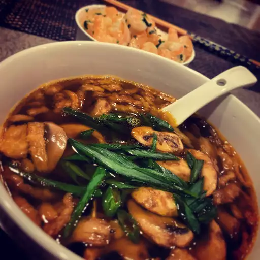

Miso Soup

Description
This recipe for Japanese miso soup is made with kombu, bonito flakes, and miso paste.
It's simple and comforting.
Ingredients
- 4 cups water
- 1 (4 inch) piece dashi kombu (dried kelp)
- 1/2 cup bonito flakes
- 6 ounces tofu, cut into chunks
- 1 teaspoon dried wakame
- 3 tablespoons miso paste
- 1/4 cup chopped green onions
Steps
- Heat water in a large pot over low heat. Add kombu and cook until just simmering. Stir in bonito flakes, then remove dashi stock from the heat. Let dashi sit, uncovered, for 5 minutes. Strain and set aside.
- Heat 3 1/2 cups dashi in a pot over medium heat. Add tofu and wakame and stir to combine. Remove 1 cup warmed dashi to a small bowl and whisk in miso paste. Pour miso mixture back into the pot with remaining dashi. Stir until warmed through. Serve garnished with chopped green onions.